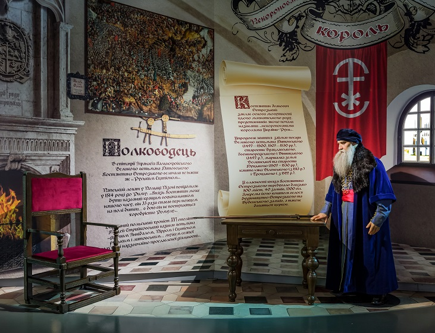
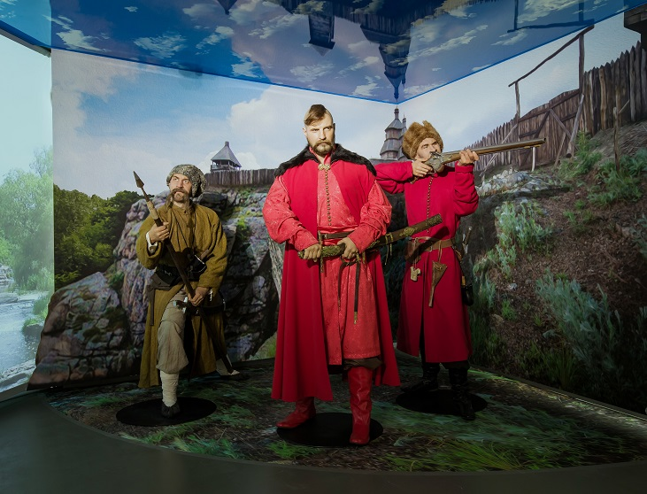
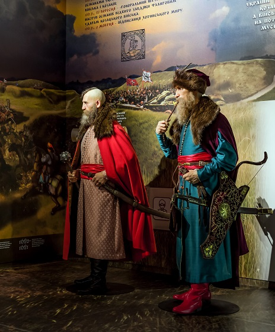
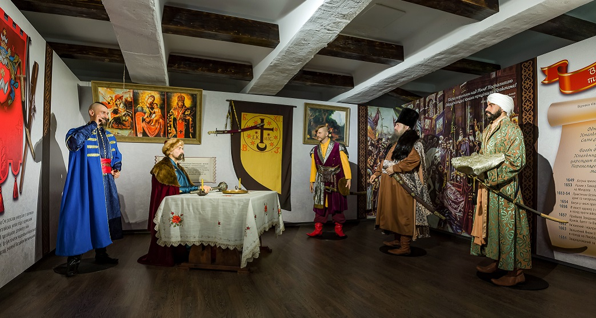

козацька доба - становлення УКРАЇНИ
XV ст. - XVIII ст.
Одні з найдавніших на сьогодні писемних згадок про українське козацтво за 1489 та 1492 роки переконливо засвідчили його запеклу боротьбу з войовничими турками і татарами, яка продовжувалася протягом наступних століть. Запорозька Січ – це своєрідне військово-політичне утворення, яке виникло на південних землях України, і надалі було найхарактернішим проявом військової культури української нації. Із західним світом козаків поєднували такі елементи лицарства, як родинний принцип організації, побратимство, рівність, демократизм; морально-етичний кодекс поведінки воїна-січовика – мужність, відвага, вірність, честь, добра слава, боротьба проти ворогів віри, оборона вітчизни; специфічне ставлення до жінки, аскетизм, релігійність тощо. Козаки самоусвідомлювали себе особисто вільними людьми, спосіб життя яких визначали воєнне ремесло і належність до військової спільноти. Постійна боротьба з кочовими народами Сходу сприяла виникненню у козаків певних видів військового мистецтва та змусила їх до створення власних збройних сил (в тому числі і потужного морського флоту), які протистояли османсько-татарській агресії.
Українське козацтво: виникнення та устрій
Характерною рисою заселення території України у XV ст. було те, що основна маса людності мешкала на здавна обжитих землях - Київщині, Галичині, Волині, Поліссі та Поділлі. А південні землі - Середня Наддніпрянщина, Запоріжжя - мали значні природні багатства, але були незаселені. Саме тут і постає нове соціальне явище - козацтво.
Серед причин, які зумовили появу козацтва, можна потрібно виділити:
- соціальні
- посилення феодальної експлуатації
- юридичне оформлення кріпосної залежності
- економічні
- нестача орної землі
- необхідність колонізації вільних земель Дикого поля
- політичні
- національні
- спротив політиці колонізації
- покатоличення українського населення
- стратегічні
-
Князь Констянтин острозький - некоронований король України-Руси
Сюжет висвітлює роль однієї з найвидатніших родин в українській історії XIV-XVI століть – родини князів Острозьких, яка подарувала світові прославлених діячів української та східно-європейської політики, військової справи, дипломатії, науки та культури.
Дізнатися більше  -
легендарний засновник трідицій запорозької січі - дмитро Байда Вишневецький
Композиція присвячена славетній історії українського козацтва, що упродовж століть відстоювало свободу України як незалежної суверенної держави і з часом стало для українців символом волелюбної нації. Дмитро Вишневецький - перший козацький гетьман, засновник традицій першої Запорозької Січі..
Дізнатися більше  -
Петро Конашевич-Сагайдачний - славетний гетьман війська запорозького
Сюжет зображує Петра Сагайдачного та Великого гетьмана Литовського Яна Кароля Ходкевича під час Хотинської війни з Османською Імперією 30 серпня - 28 вересня 1621 року. Гетьман Сагайдачний - видатний полководець, оспіваний в українських народних...
Дізнатися більше  -
УКРАЇНСЬКА КОЗАЦЬКА ДЕРЖАВА ГЕТЬМАНА БОГДАНА ХМЕЛЬНИЦЬКОГО
Сюжет символізує роль Богдана Хмельницького у становленні Козацької держави, його дипломатичний хист і майстерність вибудовування геополітичних союзів. Сцена відтворює знаменитий офорт Тараса Шевченка Дари в Чигирині із зображеними на ньому турецьким, польським і російським послами ...
Дізнатися більше 
Maecenas lacinia felis nec placerat sollicitudin. Quisque placerat dolor at scelerisque imperdiet. Phasellus tristique felis dolor.
Maecenas elementum in risus sed condimentum. Duis convallis ante ac tempus maximus. Fusce malesuada sed velit ut dictum. Morbi faucibus vitae orci at euismod. Integer auctor augue in erat vehicula, quis fermentum ex finibus.
Mauris pretium elit a dui pulvinar, in ornare sapien euismod. Nullam interdum nisl ante, id feugiat quam euismod commodo. Sed ultrices lectus ut iaculis rhoncus. Aenean non dignissim justo, at fermentum turpis. Sed molestie, ligula ut molestie ultrices, tellus ligula viverra neque, malesuada consectetur diam sapien volutpat risus. Quisque eget tortor lobortis, facilisis metus eu, elementum est. Nunc sit amet erat quis ex convallis suscipit. ur ridiculus mus.